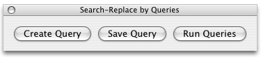
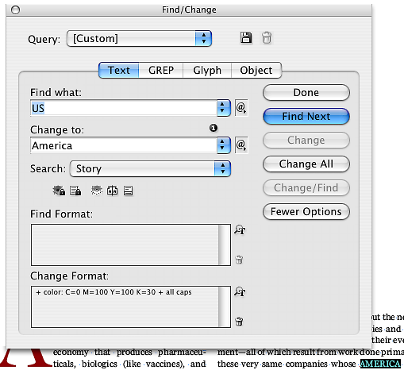
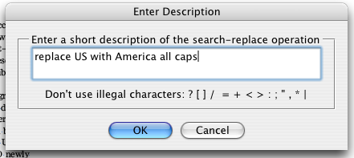
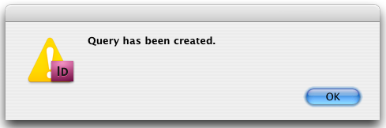
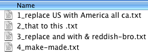

Find change by queries
Script for InDesign CS3 and CS4 version 5.
Performs a series of find-change operations based on the previously saved settings.
Here is how it works:
Run the script — a small floating dialog will appear, move it to desired location on your screen.

1. Click Create Query button — Find/Replace dialog will appear. Make sure the text tab is selected. Enter parameters for your search. Click Find/Find Next then Change, or optionally Change All. Ensure that the changes were made correctly.

2. Click Save Query button — the changes you made in the previous step will be automatically undone and a dialog box will appear. Enter a short description for your query. Don't use any illegal characters, because the first 30 characters will be used for the file name.

After you press OK, a dialog will pop up:

Repeat steps 1-2 to save more queries.
3. When you want to run the series of saved queries, press Run Queries button.
The script creates a folder called Queries in the same folder where the script located. That's where your queries are saved. Each query is saved to a separate text file. The name of the file starts with a number, which is automatically incremented with each saved file. These numbers correspond to the order the queries are run, so you can change them if necessary

Currently the script supports only Text search, but in the future I am going to develop it further to support GREP and Glyph. So far it works only on the active document.
Click here to download.